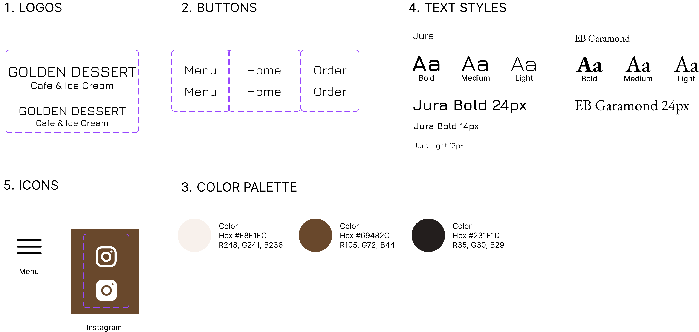

Cafe Website Redesign
ROLE
UI Design, Frontend Dev
TEAM
Individual
TIMELINE
1 Week
TOOLS
Figma, HTML, CSS
PROBLEM
Golden Dessert & Cafe in Providence, RI offers a wide menu of drinks, desserts, and meals, but their outdated website frustrates users with poor layout, responsiveness, and accessibility.
SOLUTION
The redesign targets local customers seeking a smoother, more modern online experience, one that matches what they expect from other cafés and better reflects Golden Dessert & Cafe’s cozy, welcoming vibe.
Problems
The main issues of the old webpage can be categorized into the following five aspects:
1. Efficiency
Most information is laid out without much organization. The page is not responsive, and when viewing on a narrow screen the menu item names and pictures mismatch.
2. Learnability
It’s unclear which components are clickable without hovering over them.
3. Memorability
It’s unlikely that users will easily remember the location of each item, as they are scattered throughout the page, with relatively similar sizes. The buttons, heading, and contact information are the same size.
4. Conceptual Model
Some components are used in unexpected ways. For example, one highlighted text redirects to a pdf, another is not clickable. The dessert and drink pictures are clickable but has no actual functioanlity, and the purpose of the like buttons are unclear since there is no sense of user of user interactions.
5. Accessibility
Many texts on images incurred contrast errors when examined under WAVE. Some have small fonts which makes them even harder to read.
01 Style Guide
To address these issues, I began by developing a visual style guide that emphasized clarity, hierarchy, and accessibility—providing a consistent look and feel across all components.
Following that, I created a revised page layout to organize content more intuitively and ensure a smoother, more engaging user experience.
02 Page Layout

03 Final Product
The new site's responsiveness was tested with different screen sizes, different languages, and different font sizes. The following is a gallery of these responsiveness tests.